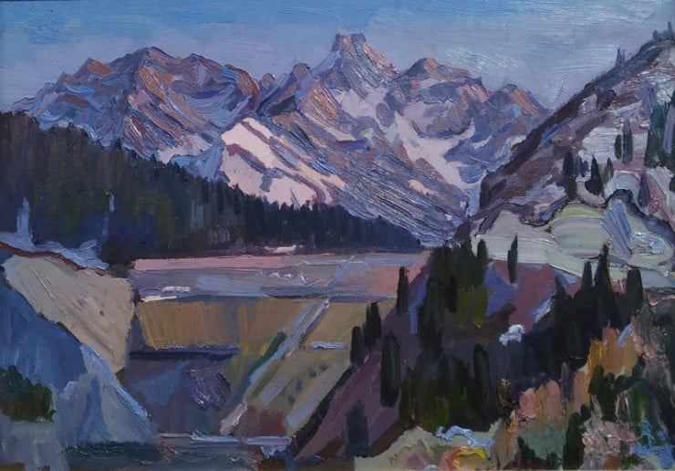

Жанатай Шарденов

Толығырақ:
т. 1927, Қазақстан, Қаскелең

Жаңатай Шарденов, "Тау Жаңғырығы", 1984, 200 см х 150 см, Кенепте Май.
Жанатай Шарденов: Қазақ Пейзаж Өнерінің Шебері
Жанатай Шарденов Қазақстанның алуан түрлі пейзаждарын баурап алатын бейнелері үшін құрметке ие. Оның туындылары көбінесе керемет тауларды, кең далаларды және осы табиғи жағдайларды өмірге әкелетін жарық пен көлеңкенің нәзік ойынын көрсетеді.
Шарденовтың қылқаламы мен түстер палитрасы қазақ табиғатының тыныштығын да, ұлылығын да оятатын мәнерлілігімен танымал.